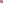
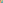

The logo's shape is fixed; its colour story is now open. Each direction below recolours the actual monogram artwork (gradients preserved), pairs it with a foundation palette and a typographic system, and shows the result as a cover mockup. All typefaces are open-source variable fonts — for a programme meant to last decades, the brand should never depend on a licence renewal.
Logo previews are clean vector rebuilds of the exact monogram geometry — see them applied on real collateral in Mockups.
The current baseline: keep the original spectrum logo, surround it with near-black ink and warm paper. Colour stays exactly as students already know it — the refinement is entirely in restraint and typography.

Humans ×
Technology.
"Nineteen students. Nineteen degrees."
Best for: continuity — zero disruption to printed collateral. Watch: the candy-bright spectrum can read "friendly" rather than "elite"; relies on layout discipline to feel prestigious.
The heritage move. The spectrum deepens into jewel tones — indigo, wine, champagne gold, sage teal, oxford blue — on ivory and midnight. Fraunces brings old-style warmth with a contemporary cut. This is the direction that says institution, not initiative: it will look right on a degree scroll in 2046.

Humans ×
Technology.
"Nineteen students. Nineteen degrees."
Best for: maximum prestige and longevity; ceremonial print (champagne foils beautifully). Watch: furthest from launch collateral — requires reprinting over time; must stay modern in digital use or it tips into "old-fashioned".
The human move. The spectrum warms toward sunlight — plum, coral, amber, olive, petrol — on cream, with espresso text. Newsreader's editorial serif leads; Figtree keeps the body friendly. This direction foregrounds the people half of the brand core: mentorship, stories, belonging.

Humans ×
Technology.
"Nineteen students. Nineteen degrees."
Best for: recruitment warmth, student-story content, social media. Watch: the softest of the four — "elite" must come entirely from copy and restraint; warm palettes also date faster than neutrals.
The technology move. The spectrum cools — ultramarine, signal magenta, cyan, emerald, azure — on deep slate and ice. A sharp grotesk leads with mono details for codes and data (JS3000, CUS101, 34.5). This direction foregrounds the AI-era, future-facing half of the core.
Humans ×
Technology.
"Nineteen students. Nineteen degrees."
Best for: digital-first presence, AI-era positioning, attracting STEM-leaning top scorers. Watch: the coldest direction — risks contradicting the "human-centric" half of the mission unless people-photography carries warmth.
| 01 Ink & Paper | 02 Midnight Scholar | 03 Daylight Campus | 04 Precision Spectrum | |
|---|---|---|---|---|
| Feels like | Contemporary editorial | Heritage institution | Warm community | Future-facing lab |
| Logo | Unchanged | Jewel-tone recolour | Sun-warm recolour | Cool recolour |
| Type lead | Grotesk | Serif | Serif (editorial) | Grotesk + mono |
| Brand-core balance | Even | Even, gravitas | Human-leaning | Tech-leaning |
| Ages over 20 years | Well | Best | Moderate | Needs refresh cycles |
| Cost of adoption | None | Highest (reprint over time) | Medium | Medium |
Midnight Scholar (02) is the strongest answer to "a long-lasting elite brand": jewel tones and Fraunces will not date, the champagne accent gives ceremonial range (scrolls, dinners, foil print), and it is the only direction where the recoloured logo raises perceived prestige rather than just restyling it. Pair it with a staged rollout — digital first, print as stock is reused.
The systems are also modular: a credible hybrid is the Scholar palette with Direction 01's Space Grotesk structure (keeping Fraunces only as the voice), if full serif-led feels too traditional. Since you liked the humanist serif: Fraunces and Newsreader are both shown here as upgrades on Source Serif 4 — compare them in the Voice rows above.